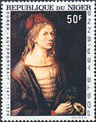
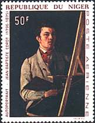
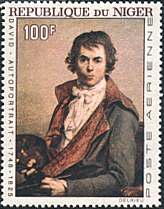
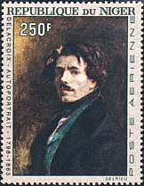

BEAUTIFUL OLDER ISSUES OF NIGER
With time, the Postal Administration of
the Republic of Niger has issued many interesting postal stamp. Four of them, beautiful self-portraits of
the renowned masters Dürer, Corot,
David and Delacroix, issued in 1967 and 1968, are shown below. Tip:
point at the stamps with the mouse index for more information.
 |
 |
 |
 |
ILLEGAL STAMP ISSUES OF NIGER
Unfortunately, stamps got issued in the name of the Republic of Niger that weren't approved by its postal administration. This fact was recently announced to the philatelic press by the The Universal Postal Union, a member of The World Association for the Development of Philately (WADP), as part of their fight against illegal stamp issues. The Paintings and Arts of Stamps Internet Club (PASIC), through its President, actively collaborates with the International Bureau of the Universal Postal Union in order to stop the issuing of illegal stamps, a practice that especially hits young and inexperienced stamp collectors.
The Postal Administration of Niger draws to our attention that the following stamp issues of the company France Philatelie 2000 were printed without permission. They cannot be used for franking correspondence in the Republic of Niger.
-
Great Painters, with logo PHILEXFRANCE. Sheetlets of 9 stamps: Delacroix, Toulouse-Lautrec, Gauguin, Renoir, Van Gogh and Matisse. Sheets Delacroix and Van Gogh.
-
Sheetlets with 9 stamps showing French actresses and actors.
-
The African Visit of The Pope. A sheetlet with 9 stamps and a sheet with 2 stamps.
-
Events of the 20th century; a sheetlet with 9 stamps for each of the decades 1900-1909, 1910-1919, 1920-1929, 1930-1939, 1940-1949, 1950-1959, 1960-1969, 1970-1979 and 1980-1989.
-
Lady Diana, with nine overprints. Two sheets with nine stamps and 4 sheets with one stamp each.
-
Chess, a sheet with the face value of 725 F.
-
Frank Sinatra, a sheet with the face value of 2000 F.
-
The wedding of the prince Eduard with Sophie, a sheet with a face value of 2000 F.
-
History of the Space Conquest, one sheet showing the Haley comet (2000 F), another sheet displaying John Glenn (3000 F)
-
J. F. Kennedy, one sheet with 9 stamps.
-
Star Wars, a sheetlet with 9 stamps and a sheet with the face value of 2000 F.
Background: Engraving by Karl Bickel, Zürich,
Switzerland. Sculpture by René de St. Marceaux, Paris, France.
Link:
UPU
- Art
Notice: An announcement concerning the illegal issues of Niger was made and a link to this page was provided on the major philatelic newsgroups RCSD and RCSM on 14th of August 2000. Please read below an interesting reaction:
Victor,
Thanks for that. How or why do these charlatans
get away with it. Is there not some copyright on the country name 'Niger'. The
labels were obviously not produced to use for postage but to fleece
collectors. Can we get a list of dealers who stock and sell them and perhaps
via the newsgroups publicize this and perhaps boycott the dealers. I doubt if
they would participate in a scam like this again if we could make it hurt
their trade! Bob - Blowing off steam, Sorry!!"